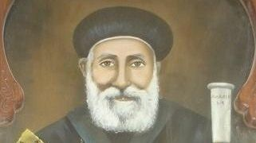

Saint Pierre 7
Découvre l'histoire des papes de l'église copte orthodoxe.
En ce jour de l’an 1568 des martyrs (1852 après Jésus Christ) eut lieu le décès du pape Pierre VII (Boutros)le 109ème patriarche de la prédication de saint Marc. Ce père est né au village d’al-Gawli. C’est pour cette raison qu’il fut surnommé Boutros-el-Gawli. Il se fit moine au monastère de saint Antoine où il fut ordonné prêtre puis higoumène à cause de sa bonne conduite et ses nombreuses vertus.Lorsque sa réputation parvint au pape Marc VIII, celui-ci le fit venir auprès de lui dans le but de le sacrer métropolite sur l’Ethiopie. Toutefois il le nomma comme métropolite général pour l’Eglise sous le nom d’Abba Théophile en le gardant auprès de lui pour organiser les affaires de l’Eglise.
Après le décès du pape Marc VIII ce père fut choisi pour lui succéder. Il fut intronisé trois jours plus tard dans la cathédrale saint Marc sous le nom de Pierre VII en 1810. Il mena une vie d’ascète tant dans sa manière de se nourrir que dans ces vêtements. De plus il était humble et lisait beaucoup. A son époque la paix et la quiétude comblèrent l’Eglise. Il méprisait la simonie et était très strict dans le choix des personnes auxquelles il conférait une quelconque ordination.
Une année où la crue du Nil n’arrivait pas le gouverneur d’Egypte lui demanda de prier pour la montée de l’eau. Le pape fit dresser une tente sur les rives du Nil pour y célébrer la liturgie eucharistique avec les évêques, les prêtres et les fidèles. Lorsqu’il eut finit, il lava les vases de l’autel puis versa l’eau dans le Nil en utilisant les ustensiles de l’autel. L’eau se mit immédiatement à gonfler et atteint rapidement la tente qu’il avait dressée.
Ibrahim pacha fils de Mohammad Ali pacha qui était gouverneur de la Syrie apprit qu’une lumière sacrée apparaissait du tombeau de notre Seigneur le samedi saint. Voulant s’assurer de la véracité de ces faits, il convoqua le pape Pierre à Jérusalem. Ayant constaté ce phénomène personnellement, il honora le pape et le ramena au Caire avec beaucoup de respect.
A cette époque aussi, l’empereur de Russie envoya en délégation des membres de sa famille pour proposer au pape de prendre l’Eglise copte sous sa protection. Mais le pape déclina cette proposition avec tact en lui demandant : « Est-ce que votre roi va mourir ? » Lorsque le prince lui répondit par l’affirmative il lui dit : « Nous sommes sous la protection d’un Roi immortel, le Seigneur Jésus Christ. » Lorsque Mohammad Ali apprit ce qui s’était passé, il le respecta de plus en plus et s’assura de son patriotisme et de celui d’ l’Eglise copte.
Après avoir accompli son bon combat, il décéda en paix et fut enterré à la cathédrale saint Marc à el-Azbakia au Caire.
Poser une question
Si vous avez une question, quelque chose que vous ne comprennez pas ou une suggestion pour le site informez-le en remplissant ce formulaire !